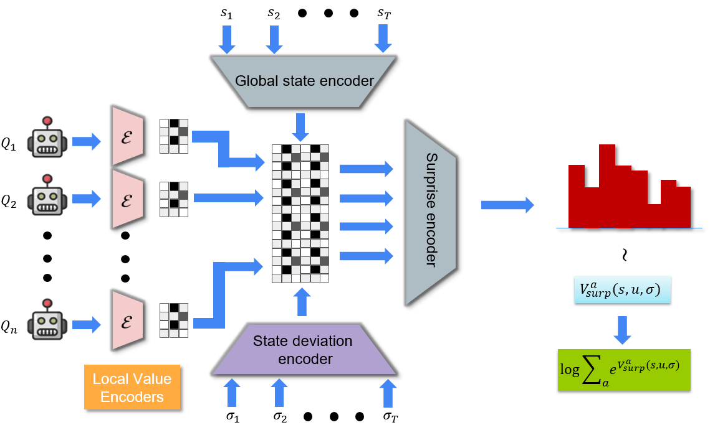

Karush Suri, Xiao Qi Shi, Konstantinos Plataniotis, Yuri Lawryshyn
$36^{\text{th}}$ Conference on Neural Information Processing Systesm
(NeurIPS 2022)
Multi-Agent Reinforcement Learning (MARL) has demonstrated significant success by virtue of collaboration across agents. Recent work, on the other hand, introduces surprise which quantifies the degree of change in an agent’s environment. Surprise-based learning has received significant attention in the case of single-agent entropic settings but remains an open problem for fast-paced dynamics in multi-agent scenarios. A potential alternative to address surprise may be realized through the lens of free-energy minimization. This project explores surprise minimization in multi-agent learning by utilizing the free energy across all agents in a multiagent system. A temporal Energy-Based Model (EBM) represents an estimate of surprise which is minimized over the joint agent distribution. Such a scheme results in convergence towards minimum energy configurations akin to least surprise. Additionally, multi-agent populations acquire robust policies.
Below is an intuitive illustration of the objective. The joint agent population aims to minimize surprise corresponding to minimum energy configurations. Agents collaborate in partially-observed worlds to attain a joint niche. This local niche implicitly corresponds to a fixed point of on the energy landscape. Note that agents act locally with actions conditioned on their own action observation histories. It is by virtue of preconditioned values estimations that the surprise minimization scheme informs agents of joint surprise. Upon population’s convergence to a suitable configuration, agents continue to experience minimum (yet finite) surprise arising from evironment dynamics.
